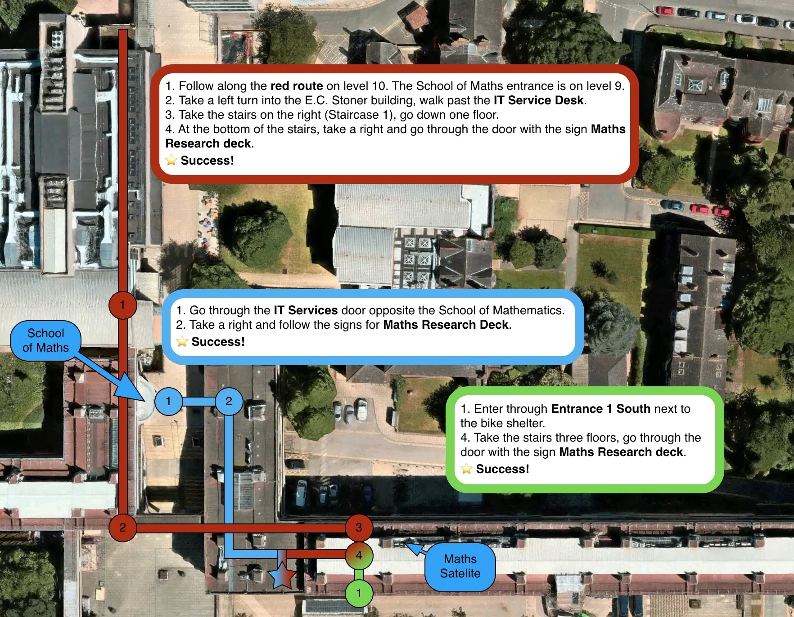

  <main id="main-content">
    <section class="page-section">
      <h1>Contact</h1>
      <p class="lead">Email is the best way to reach me.</p>
	  <section class="page-section">
      <dl class="contact-list reading-width">
        <div>
          <dt>Email</dt>
          <dd><span id="e9"></span><noscript>P.Gracar [at] leeds [dot] ac [dot] uk</noscript></dd>
        </div>
        <div>
          <dt>Office</dt>
          <dd>
            9.10p1 on the Maths Research Deck of the EC Stoner Building. Open this
            <button class="hover-image" type="button" aria-label="Preview office map">map preview
              
            </button>
            or see the <a href="map.html">directions page</a>.
          </dd>
        </div>
        <div>
          <dt>Address</dt>
          <dd>School of Mathematics, University of Leeds, Leeds LS2 9JT, UK.</dd>
        </div>
        <div>
          <dt>Staff profile</dt>
          <dd>My <a href="https://eps.leeds.ac.uk/maths/staff/13156/dr-peter-gracar">University of Leeds staff page</a> has my telephone number.</dd>
        </div>
      </dl>
  	</section>
    </section>
  </main>
